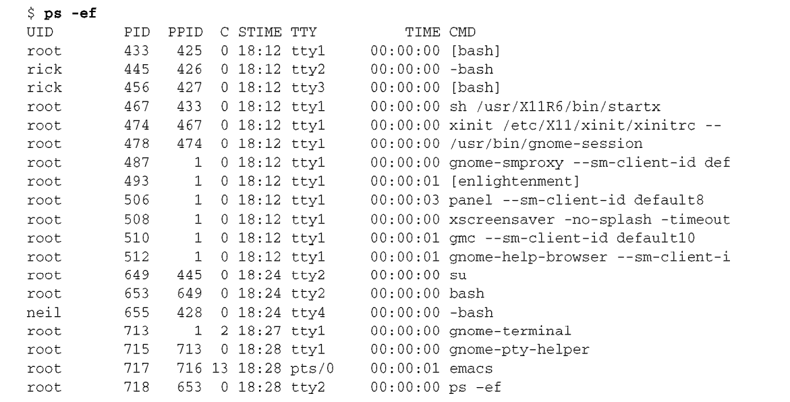

Linux 程序设计
Table of Contents
1 Linux程序设计
学习Linux程序设计主要认识Linux的系统API，通过系统所提供的API来操控硬件资源。
2 文件操作
在Linux中，一切（或几乎一切）都是文件。 —— 意味着操作硬件资源就像操作文件一样。
2.1 底层系统调用
文件操作的5个基本的函数—— open 、 close 、 read 、 write 和 ioctl 。
open：打开文件或设备。read：从打开的文件或设备里读数据。write：向文件或设备写数据。close：关闭文件或设备。ioctl：把控制信息传递给设备驱动程序。系统调用ioctl用于提供一些与特定硬件设备有关的必要控制（与正常的输入输出相反），所以它
的用法随设备的不同而不同。例如，ioctl调用可以用于回绕磁带机或设置串行口的流控特性。因此， ioctl并不需要具备可移植性。此外，每个驱动程序都定义了它自己的一组ioctl命令。
2.2 特殊的文件
2.2.1 目录
目录是用于保存其他文件的节点号和名字的文件。
2.2.1.1 删除目录的文件
删除一个文件时，实质上是删除了该文件对应的目录项，同时指向该文件的链接数减1;
如果指向某个文件的链接数（即ls -l命令的输出中跟在访问权限后面的那个数字）变为零， 就表示该节点以及其指向的数据不再被使用，磁盘上的相应位置就会被标记为可用空间。
2.2.1.2 进入家目录
进入自己的家目录： cd ~
进入他人的家目录： cd ~user 其中user表示别人的家目录名。
糟糕的是，标准库函数不能理解文件名参数中的shell波浪线速记符号
2.2.2 设备文件
UNIX和Linux中比较重要的设备文件有3个： /dev/console、/dev/tty和/dev/null 。
3 进程管理
3.1 进程的定义
“一个其中运行着一个或多个线程的地址空间和这些线程所需要的系统资源。” UNIX标准（特别是IEEE Std 1003.1, 2004年版）
3.2 进程的组成
正在运行的程序或进程由程序代码、数据、变量（占用着系统内存）、打开的文件（文件描 述符）和环境组成
3.3 操作系统如何管理多个进程?
3.3.1 当程序被装载到内存中时,那部分可以被共享,那部分是不能共享的?
3.3.2 当物理内存不够时,Linux如何处理即将装入内存的数据?
3.4 ps命令输出细节

- CMD一列显示启动进程所使用的命令。
- TTY一列显示了进程是从哪一个终端启动的
- TIME一列是进程目前为止所占用的CPU时间
- STAT一列用来表明进程的当前状态
3.4.1 系统的进程状态
| STAT代码 | 说明 |
|---|---|
| S | 睡眠。通常是在等待某个事件的发生，如一个信号或有输入可用 |
| R | 运行。严格来说，应是“可运行”，即在运行队列中，处于正在执行或即将运行状态 |
| D | 不可中断的睡眠（等待）。通常是在等待输入或输出完成 |
| T | 停止。通常是被shell作业控制所停止，或者进程正处于调试器的控制之下 |
| Z | 死（Defunct）进程或僵尸（zombie）进程 |
| N | 低优先级任务，nice |
| W | 分页。（不适用于2.6版本开始的Linux内核） |
| s | 进程是会话期首进程 |
| + | 进程属于前台进程组 |
| l | 进程是多线程的 |
| < | 高优先级任务 |
3.5 父进程和子进程
每个进程都是由另一个我们称之为父进程的进程启动的，被父进程启动的进程叫做子进程。
3.5.1 进程号为1的进程
Linux系统启动时，它将运行一个名为 init 的进程，该进程是系统运行的第一个进程，
它的进程号为1。